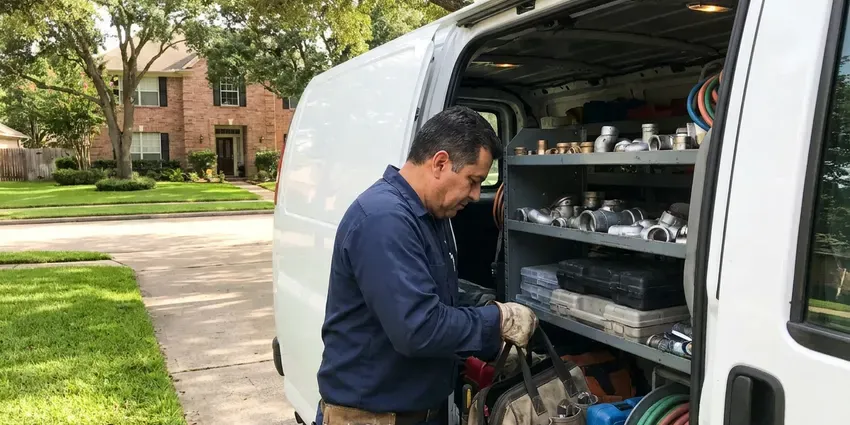

Slab Leak Detection in Yankton, SD
Hearing water under the floor in Yankton, SD? We trace the line and find the leak. No guesswork.
- Acoustic Slab Locating
- Thermal Floor Scans
- Post-Tension Cable Scanning
- Marked Within Inches

A Spinning Meter or Warm Floors in Yankton, SD?
A meter test confirms the leak first, then locate it through the concrete.
Under-Slab Leak Locating in Yankton, SD
HWR Plumbing detects leaks in lines buried in or under slab foundations. We isolate hot and cold with pressure tests, trace the pipe with line locators and hear the leak through the concrete with ground microphones. The mark is usually within inches.
Our expertise includes:
- Hot and cold side pressure isolation
- Attic and wall reroute planning
- Camera inspection of under-slab drains

Additional Plumbing Maintenance Services in Yankton, SD
Our maintenance and specialty plumbing services in Yankton, SD protect your home year-round and extend the life of every system.


Customers
Why Choose HWR Plumbing for Slab Leak Detection in Yankton, SD?
We locate with modern gear so nobody digs on a guess in your Yankton, SD home. Thermal cameras, ground microphones and line tracers each confirm part of the picture, and when two of them agree on the same spot we mark it on the floor. The method is reliable.
- Cross-Checked Marks, Two methods confirm the spot before we mark the floor.
- Water Bills, A small slab leak can waste hundreds of gallons a day, and the bill shows it.
- Foundation Focus, Finding the leak early protects the soil under the slab, a real concern for South Dakota homeowners.
Citywide Coverage
We find slab leaks in homes across Yankton, from 1970s ranch houses with soft copper under the floor to newer homes with PEX sleeved through the concrete. Each era has its own pipe. That tells our techs which tools to lead with and where to begin.
Experienced Team
Licensed plumbers lead our slab leak team, which means the tech who finds it knows the repair options cold. It changes the recommendation. They know how moving soil strains buried pipe and where it tends to break.
Safety-First Approach
Our locating methods do not damage your home, and the tracer gas we use is a harmless hydrogen and nitrogen mix that vents off on its own. We protect floors while working. Repairs meet the building and plumbing codes your city enforces.
Trusted Certified Yankton Plumbing Services Professionals
At HWR Plumbing, we take pride in licensed, certified plumbing services throughout Yankton, SD. Those papers on the wall mean something. Every repair, install and maintenance visit follows strict safety and quality rules, and the plumbers doing the work carry recognized industry credentials.
Call Us Now PHCC Plumbing Contractor Recognition
PHCC Plumbing Contractor Recognition Better Business Bureau (BBB) Accreditation
Better Business Bureau (BBB) Accreditation Angi Certified Pro
Angi Certified Pro ISO 9001 Quality Management Certification
ISO 9001 Quality Management CertificationSlab Leak Detection and Repair in Yankton, SD
Post-Tension Slab Leak Detection in Yankton
A lot of newer houses are built on post-tension slabs. These slabs have steel tendons stretched under tens of thousands of pounds of force, and cutting one by mistake is dangerous and can damage the foundation. We scan for tendons with ground-penetrating radar or a rebar locator before opening anything, or suggest a reroute that skips the slab.

Thermal Imaging for Slab Leaks in Yankton, SD
Hot water leaking under the slab warms the floor above it. A thermal camera shows that warm bloom through tile, vinyl and even thin carpet, often spreading outward from the leak point in a recognizable shape. It only works on hot lines. It shrinks the search area before we listen.
Commercial Slab Leak Detection in Yankton, SD
Offices, shops and restaurants on slabs in Yankton, SD lose water quickly because their supply lines are larger. We test after hours if needed. HWR Plumbing isolates zones, traces mains and branch lines under the floor, then marks the leak so the repair fits around your hours.
Direct Access Slab Leak Repair in Yankton, SD
A single leak on sound pipe can be fixed in place. We cut a small opening at the marked spot, dig down to the pipe, repair the section with approved fittings and pressure test it. Then we backfill and patch the concrete level, ready for flooring. Accurate marks keep that hole small.
Pressure Testing and Isolation in Yankton
We always start with isolation. Our tech closes the main, caps or valves off the hot and cold sides, and puts a gauge on each, then watches which side loses pressure over a set time. That tells us where to look. It also rules out a toilet or faucet leak masquerading as a slab leak in your Yankton, SD home.
Listening Through Concrete in Yankton
The microphones pick up faint sounds. That means appliances, HVAC fans and traffic all show up in the headphones, so our techs shut off what they can and learn to tune out the rest, which is a skill that takes years to get good at. A pressurized line gives the clearest sound in your Yankton home.
Slab Leaks in Commercial Buildings in Yankton
Commercial slabs are thicker and carry larger pipe, so leaks can move more water and be harder to hear from the surface with a standard ground microphone. Our approach changes for those. Our techs combine zone isolation, line tracing and tracer gas, scheduling the testing around your business hours in Yankton.

Repiping After Repeat Slab Leaks in Yankton, SD
Two slab leaks usually means more are coming. The rest of the pipe has likely aged the same way, so repiping replaces every supply line with new PEX or copper through the walls and attic, which ends the pattern of new leaks and new floor openings. A full repipe takes about two to four days.
Slab Leak Detection Near Me in Yankton, SD
A fast answer on a suspected slab leak limits damage to floors and soil, since a pinhole leaking a quart an hour puts more than 150 gallons a month under the foundation. Most appointments happen within a day in Yankton. Recent bills help.
Need a slab leak found near you? HWR Plumbing loads the truck with all our locating gear for the first visit, from ground microphones and line tracers to tracer gas for quiet plastic lines. One visit usually does it in Yankton.
HWR Plumbing at a Glance
- Licensed and insured plumbers serving Yankton, SD
- Same-day appointments and 24/7 emergency response
- Upfront, flat-rate pricing before work begins
- 4.8-star rated by 304+ South Dakota customers
Yankton Map
Yankton Information
- Population
- 15,630
- Area codes
- Local
- Service area
- Yankton and communities within 40 miles
- Nearby
- Vermillion, Tea, Harrisburg, Sioux Falls
Plenty of homes in Yankton, SD sit on slabs with supply lines buried underneath, so under-slab leaks are a common and costly repair. Housing in South Dakota mixes older farmhouses and town homes with newer subdivisions, so plumbing can range from cast iron and galvanized to modern PEX.
Expert Services
Reach out to HWR Plumbing for honest, reliable plumbing from people who know the trade in Yankton, SD.
Our Specialized Plumbing Services in Yankton, SD
At HWR Plumbing, you get every kind of plumbing service from one company across Yankton, SD. We go from leak detection all the way to full system installations, for homes and commercial buildings, and we do it quickly at a fair price. Here are the core services we offer:


Our Slab Leak Steps in Yankton, SD
Every step shrinks the search area until we can mark the leak within inches in your Yankton, SD home.
Call and Describe
Call (605) 480-9736 and describe the signs you are seeing, like a warm floor or a running meter. We book a visit.
Isolate and Locate
Our tech isolates the hot and cold sides, then traces and listens through the slab at your Yankton home.
Mark and Price
We mark the leak and price each repair option, from spot repair to reroute.
Frequently Asked Questions About Slab Leak Detection in Yankton
Expect $250 to $700 for slab leak detection in Yankton. Tougher leaks cost more. The fee covers pressure isolation, line tracing, acoustic and thermal work, plus tracer gas if the line is plastic and too quiet to hear through the concrete.
Our kit includes acoustic ground microphones, FLIR thermal cameras, line tracers, pressure gauges and tracer gas sniffers for plastic pipe. Each one confirms a different part. We mark the floor only after two tools agree on the spot.
You can spot the signs. Locating it needs gear. Acoustic and thermal tools are what separate a small opening from a torn-up floor, and guessing usually means cutting concrete in the wrong place.
Yes. Leaking water can swell clay or erode the soil below. Over time that leads to cracks and settling, so fast repair protects the slab.
Soft copper under older slabs tops the list, since it corrodes from the water side and wears where it rubs concrete. PEX and CPVC can leak too. Bad fittings or heat damage are usually the cause on plastic, and galvanized under a slab rusts out with age.
Detection needs no permit. Repairs often do. Slab cutting, reroutes and repipes typically need a plumbing permit, and HWR Plumbing handles that paperwork.
High water bills, warm floor spots and the sound of running water with fixtures off show up most. Cracks matter too. Damp carpet, a sudden drop in pressure and a musty odor near baseboards also point to moisture under the slab.
Shut off all water and watch the meter for ten minutes, and walk the floors feeling for warmth. That tells you a lot. Pinpointing the leak under concrete still takes acoustic and thermal gear.
What Our Customers Say About Our Plumbing Experts

Mark T.
The floor drain in our office break room backed up every few weeks. The plumber ran a cable, then put a camera down and found roots at a joint about thirty feet out. Seeing it on the screen made the decision easy.
Drain Cleaning · Harrisburg, SD
Angela D.
Our sump pump quit during a storm and the water was an inch from the basement carpet. HWR Plumbing put in a new pump with a battery backup that same evening. We have had two heavy rains since. It kicked on both times.
Sump Pump · Vermillion, SDPaul B.
Our pit pump ran nonstop even in dry weather. The plumber found the check valve was stuck open, so the same water kept cycling back into the pit. New valve, new float switch, done in an hour. It runs quiet now.
Sump Pump · Vermillion, SD
Nathan E.
Our tankless heater kept throwing an error code and shutting off mid shower. The tech flushed the heat exchanger, which was full of scale, and replaced a bad flow sensor. Hot water has been steady for half a year now.
Water Heater Repair · Sioux Falls, SD
Marcus H.
Grease from the fryer line kept clogging the kitchen drain at my diner. HWR Plumbing hydro jetted the line after closing, showed me the buildup on camera, and set us up on a quarterly cleaning so it does not catch us on a Friday again.
Drain Cleaning · Harrisburg, SD
Emily R.
The shutoff valve under our kitchen sink snapped off in my hand on a Sunday morning. HWR Plumbing had someone out by early afternoon. He replaced both angle stops with quarter turn valves and showed me where our main shutoff was, which I honestly did not know.
Plumbing Repair · Yankton, SD